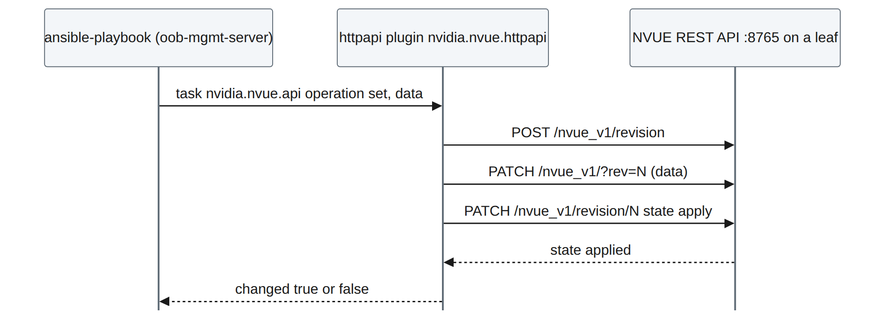
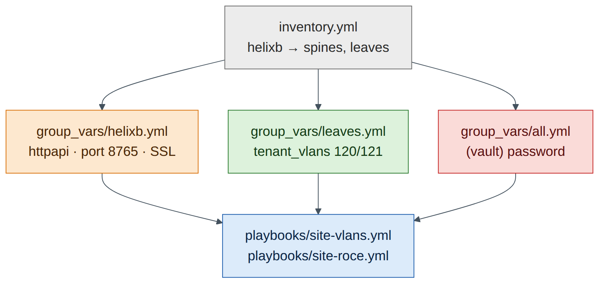

Lab 12 — Ansible Automation: VLANs and RoCE with nvidia.nvue¶
Companion to the NCP-AIN Certification Guide
This free lab is part of the hands-on companion to NCP-AIN Certification Guide by Vakeesan Thevarajah (Cloudfoxy Ltd). The book explains the theory, design choices and hardware behaviour behind every step.
Lab at a glance¶
| Book chapters | 22 (Ansible automation for Spectrum-X), 21 (NVUE REST API) |
| Exam objectives | 6.2 Automate network configuration using Ansible playbooks (VLAN creation, RoCE configuration) |
| Time | 60 minutes |
| Air resources | oob-mgmt-server (control node) and the six switches |
| Prerequisites | Labs 1, 2, 5 and 11 (Task 6: REST API listening address) |
Objectives¶
- Install Ansible and the
nvidia.nvuecollection on the oob-mgmt-server. - Build an inventory with
group_varsandhost_varsthat connects over httpapi to NVUE on port 8765. - Run a playbook that creates two VLAN-to-VNI mappings on every leaf, read them back and assert the result.
- Run a playbook that enables lossless RoCE on every switch, one switch at a time.
- Use check mode,
--limit,serialand a second run to understand idempotency. - Diagnose authentication and connectivity failures.
Background¶
Chapter 22 describes three ways to drive NVUE from Ansible: the nvidia.nvue collection (the recommended path), ansible.builtin.uri against the REST API, and SSH with nv commands. The collection's modules don't use SSH at all. They talk to the NVUE REST API through Ansible's httpapi connection plugin, on TCP 8765, and each task becomes a revision that NVUE applies.

Step-by-step¶
Task 1 — Open the API on every switch¶
Lab 11 opened the API on hxb-leaf-r1 only. Do the rest from the oob-mgmt-server:
ubuntu@oob-mgmt-server:~$ for h in hxb-spine01 hxb-spine02 hxb-leaf-r1 hxb-leaf-r2 hxb-leaf-r3 hxb-leaf-r4; do
> ip=$(getent hosts $h | awk '{print $1}')
> ssh cumulus@$h "nv set system api listening-address $ip && nv config apply -y && nv config save" >/dev/null && echo "$h $ip ok"
> done
ubuntu@oob-mgmt-server:~$ curl -s -k -u 'cumulus:CumulusLinux!' https://hxb-spine02:8765/nvue_v1/system/hostname?rev=applied
Checkpoint
- The curl call returns spine02's hostname as JSON.
Task 2 — Install Ansible and the collection¶
ubuntu@oob-mgmt-server:~$ sudo apt-get update && sudo apt-get install -y pipx
ubuntu@oob-mgmt-server:~$ pipx install --include-deps ansible && pipx ensurepath && exec bash
ubuntu@oob-mgmt-server:~$ ansible --version | head -1
ubuntu@oob-mgmt-server:~$ ansible-galaxy collection install nvidia.nvue ansible.netcommon
ubuntu@oob-mgmt-server:~$ ansible-galaxy collection list | grep -E 'nvidia.nvue|ansible.netcommon'
nvidia.nvue 1.2.9
ansible.netcommon 7.x.x
(Illustrative versions.) Read the module documentation for your version before writing tasks:
Task 3 — Project, inventory and variables¶
ubuntu@oob-mgmt-server:~$ mkdir -p ~/helix-ansible/{group_vars,host_vars,playbooks} && cd ~/helix-ansible
ubuntu@oob-mgmt-server:~/helix-ansible$ cat > inventory.yml <<'EOF'
all:
children:
helixb:
children:
spines:
hosts:
hxb-spine01:
hxb-spine02:
leaves:
hosts:
hxb-leaf-r1:
hxb-leaf-r2:
hxb-leaf-r3:
hxb-leaf-r4:
EOF
ubuntu@oob-mgmt-server:~/helix-ansible$ cat > group_vars/helixb.yml <<'EOF'
ansible_connection: ansible.netcommon.httpapi
ansible_network_os: nvidia.nvue.httpapi
ansible_httpapi_port: 8765
ansible_httpapi_use_ssl: true
ansible_httpapi_validate_certs: false # lab only: self-signed certificates
ansible_user: cumulus
ansible_password: "{{ vault_nvue_password }}"
EOF
ubuntu@oob-mgmt-server:~/helix-ansible$ cat > group_vars/leaves.yml <<'EOF'
tenant_vlans: # staging VLANs for new AURORA subnets
- { vlan: 120, vni: 10120 }
- { vlan: 121, vni: 10121 }
EOF
ubuntu@oob-mgmt-server:~/helix-ansible$ cat > ansible.cfg <<'EOF'
[defaults]
inventory = inventory.yml
host_key_checking = False
EOF
Keep the password out of plain text with Ansible Vault:
ubuntu@oob-mgmt-server:~/helix-ansible$ ansible-vault create group_vars/vault.yml
# in the editor, type: vault_nvue_password: "CumulusLinux!"
ubuntu@oob-mgmt-server:~/helix-ansible$ mv group_vars/vault.yml group_vars/all.yml
Field note
group_vars/all.yml applies to every host, so the vaulted password is available to the helixb variables. Run playbooks with --ask-vault-pass (or a vault password file in production pipelines).

Task 4 — A read-only playbook first¶
Always prove connectivity with a read before you write.
ubuntu@oob-mgmt-server:~/helix-ansible$ cat > playbooks/facts.yml <<'EOF'
- name: Read hostname and BGP ASN through the NVUE API
hosts: helixb
gather_facts: false
tasks:
- name: Get system hostname
nvidia.nvue.api:
operation: get
path: /system/hostname
register: hn
- name: Show it
ansible.builtin.debug:
msg: "{{ inventory_hostname }} reports {{ hn.message }}"
EOF
ubuntu@oob-mgmt-server:~/helix-ansible$ ansible-playbook playbooks/facts.yml --ask-vault-pass
...
PLAY RECAP *********************************************************************
hxb-leaf-r1 : ok=2 changed=0 unreachable=0 failed=0
...
Checkpoint
- All six hosts
ok=2 failed=0.
Task 5 — Playbook 1: VLANs and VNIs on every leaf¶
ubuntu@oob-mgmt-server:~/helix-ansible$ cat > playbooks/site-vlans.yml <<'EOF'
- name: Helix-B staging VLANs and VNIs
hosts: leaves
gather_facts: false
serial: 2 # two leaves at a time
max_fail_percentage: 0 # stop the rollout on the first failure
tasks:
- name: Build the NVUE bridge data from the VLAN plan
ansible.builtin.set_fact:
vlan_data: >-
{{ vlan_data | default({}) | combine({ (item.vlan | string):
{ 'vni': { (item.vni | string): {} } } }) }}
loop: "{{ tenant_vlans }}"
- name: Merge VLANs and VNIs into br_default and apply
nvidia.nvue.api:
operation: set
force: true
wait: 15
data:
bridge:
domain:
br_default:
vlan: "{{ vlan_data }}"
- name: Read back the bridge VLANs
nvidia.nvue.api:
operation: get
path: /bridge/domain/br_default/vlan
register: vlans
- name: Assert every VLAN has the right VNI
ansible.builtin.assert:
that:
- (vlans.message[item.vlan | string].vni | list | first) == (item.vni | string)
fail_msg: "VLAN {{ item.vlan }} on {{ inventory_hostname }} is not mapped to VNI {{ item.vni }}"
loop: "{{ tenant_vlans }}"
EOF
-
Dry run first, on one leaf:
Whether the nvidia.nvue modules honour check mode depends on the collection version (Chapter 22). If the run reports a change but the switch doesn't show one, the module doesn't support check mode; that's why you test in Air before production.
-
Real run, all leaves, two at a time:
-
Verify on a switch:
VLANs 120 and 121 now appear with VNIs 10120 and 10121, alongside the Lab 5 tenant VLANs, which the merge left untouched.
- Idempotency: run the playbook again. A well-behaved run reports
changed=0for the merge task, because the desired state already exists. If your collection version reportschangedon every run, note it: Chapter 22 explains why that matters for change control and how to guard against it (read first, compare, only write on a difference).
Checkpoint
- VLANs 120/121 with VNIs 10120/10121 on all four leaves; asserts passed.
- You know whether your module version is idempotent and check-mode aware.
Task 6 — Playbook 2: lossless RoCE on every switch¶
ubuntu@oob-mgmt-server:~/helix-ansible$ echo 'roce_mode: lossless' >> group_vars/helixb.yml
ubuntu@oob-mgmt-server:~/helix-ansible$ cat > playbooks/site-roce.yml <<'EOF'
- name: Helix-B RoCE QoS
hosts: helixb # leaves AND spines
gather_facts: false
serial: 1 # one switch at a time for QoS changes
max_fail_percentage: 0
tasks:
- name: Enable RoCE with the chosen mode
nvidia.nvue.api:
operation: set
force: true
wait: 20
data:
qos:
roce:
enable: "on"
mode: "{{ roce_mode }}"
- name: Read back the RoCE configuration
nvidia.nvue.api:
operation: get
path: /qos/roce
register: roce_show
- name: Assert lossless RoCE is active
ansible.builtin.assert:
that:
- "'lossless' in (roce_show.message | string)"
fail_msg: "RoCE is not {{ roce_mode }} on {{ inventory_hostname }}"
EOF
ubuntu@oob-mgmt-server:~/helix-ansible$ ansible-playbook playbooks/site-roce.yml --ask-vault-pass
Version note
The JSON keys under /qos/roce (enable, mode) follow Chapter 22. If NVUE rejects them on your release, read the current structure first with a get on /qos/roce (or nv config show -o json on a switch where you enabled RoCE by hand in Lab 3) and match it.
Confirm on a spine and a leaf with the CLI: nv show qos roce. On Cumulus VX this verifies the configured intent; the lossless data plane itself needs Spectrum hardware (Lab 3).
Task 7 — Commit the project¶
ubuntu@oob-mgmt-server:~/helix-ansible$ git init -q && git add -A && git commit -qm "Helix-B VLAN and RoCE playbooks"
The vault file is encrypted, so committing it is safe; the vault password is not in the repository.
Verify¶
- Read-only playbook succeeds on all six switches.
- VLANs 120/121 and VNIs 10120/10121 present on all leaves; second run behaviour recorded.
- RoCE lossless configured on all six switches, one at a time, with assertions passing.
Break and fix¶
Fault 1 — 401 Unauthorized
- Inject: change the vaulted password to a wrong value (
ansible-vault edit group_vars/all.yml). - Symptom: every host fails with an HTTP 401 error from the httpapi plugin.
- Diagnosis:
curl -k -u 'cumulus:<password>' https://hxb-leaf-r1:8765/nvue_v1/systemreturns 401 with the wrong password and 200 with the right one. - Fix: correct the vaulted password.
Fault 2 — connection refused on one switch
- Inject: on hxb-leaf-r4,
nv unset system api listening-address && nv config apply -y. - Symptom: only hxb-leaf-r4 fails, with "connection refused" to port 8765. SSH to the switch still works.
- Diagnosis:
nv show system apion leaf-r4 showslocalhostonly. The collection uses the API, not SSH (Chapter 22 exam trap). - Fix: re-add the listening address (Task 1) and re-run with
--limit hxb-leaf-r4.
Clean-up / save state¶
The NVUE API applies each change, and auto-save writes it to startup on current releases. To be sure, run nv config save on all switches (Lab 11's loop), then store a checkpoint (lab12-ansible).
Exam tie-in¶
- 6.2: the
nvidia.nvuecollection overansible.netcommon.httpapiwithansible_network_os: nvidia.nvue.httpapion port 8765. - VLAN creation is a merge into
bridge domain br_default vlan <id> vni <vni>; RoCE isqos rocewithmode lossless. serial,max_fail_percentage,--limit, check mode and idempotency are how you roll changes out safely.- Read-back and
assertturn a playbook from "sent a change" into "proved the result".
Review questions¶
- Which connection plugin and
ansible_network_osdo thenvidia.nvuemodules use? - SSH to a switch works but the playbook fails to connect. What do you check?
- Why does the VLAN playbook merge rather than replace the bridge VLAN list?
- What do
serial: 1andmax_fail_percentage: 0achieve in the RoCE playbook? - How do you tell whether a module is idempotent?
Answers¶
ansible.netcommon.httpapiwithansible_network_os: nvidia.nvue.httpapi, over HTTPS to port 8765.- The NVUE REST API: enabled, listening on the management address (not only localhost), port 8765 reachable, and the credentials valid.
- A merge adds VLANs 120/121 and leaves the Lab 5 tenant VLANs alone. Replacing (or
overridden) would delete any VLAN not in the playbook's list. - Changes go to one switch at a time, and the play stops at the first failure, so a bad change can't spread across the fabric.
- Run it twice with the same inputs. An idempotent task reports
changed=0on the second run because the desired state already exists.
Go deeper
The matching book chapters cover the exam objectives for this lab in full, with a Q&A pack of about 40 exam-style questions per chapter.